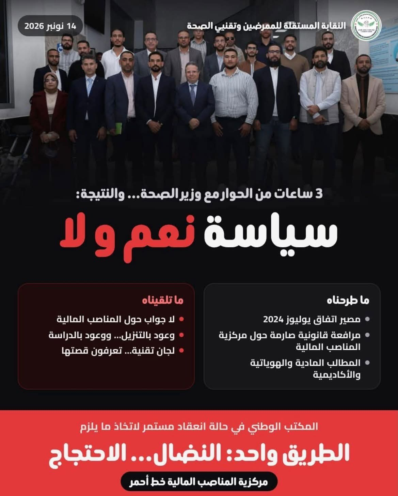

فيديو | «سياسة نعم ولا»: ثلاث ساعات من الحوار مع وزير الصحة… والطريق واحد

بعد ثلاث ساعات كاملة من الحوار مع السيد وزير الصحة والحماية الاجتماعية، يلخّص هذا الفيديو ما جرى على طاولة النقاش: مرافعة قانونية صارمة حول مصير اتفاق يوليوز 2024، ودفاع عن مركزية المناصب المالية، وطرح لجميع المطالب المادية والهوياتية والأكاديمية للممرضين وتقنيي الصحة.
لكن الجواب لم يتجاوز الوعود بالدراسة والتنزيل، في ما يمكن وصفه بـ«سياسة نعم ولا».
أمام هذا الوضع، يبقى المكتب الوطني في حالة انعقاد مستمر لاتخاذ ما يلزم، ويبقى الطريق واحداً: النضال والاحتجاج دفاعاً عن حقوقنا المشروعة. مركزية المناصب المالية خط أحمر.
فتح في تطبيق النقابة